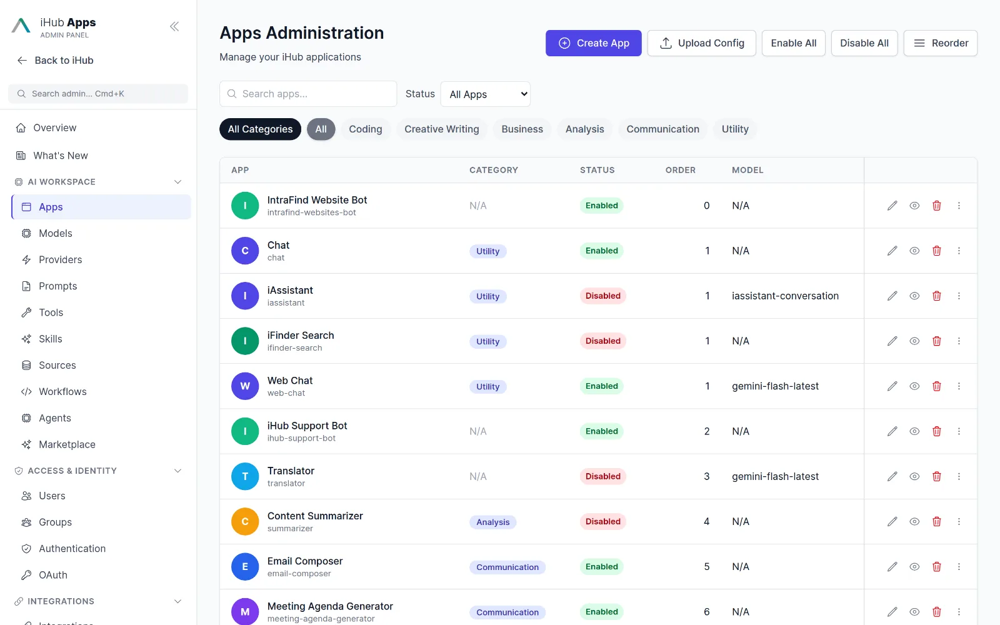
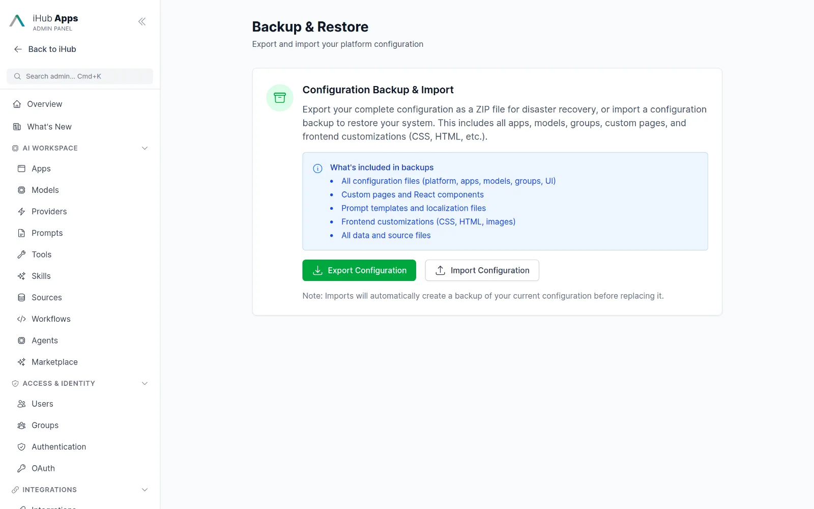
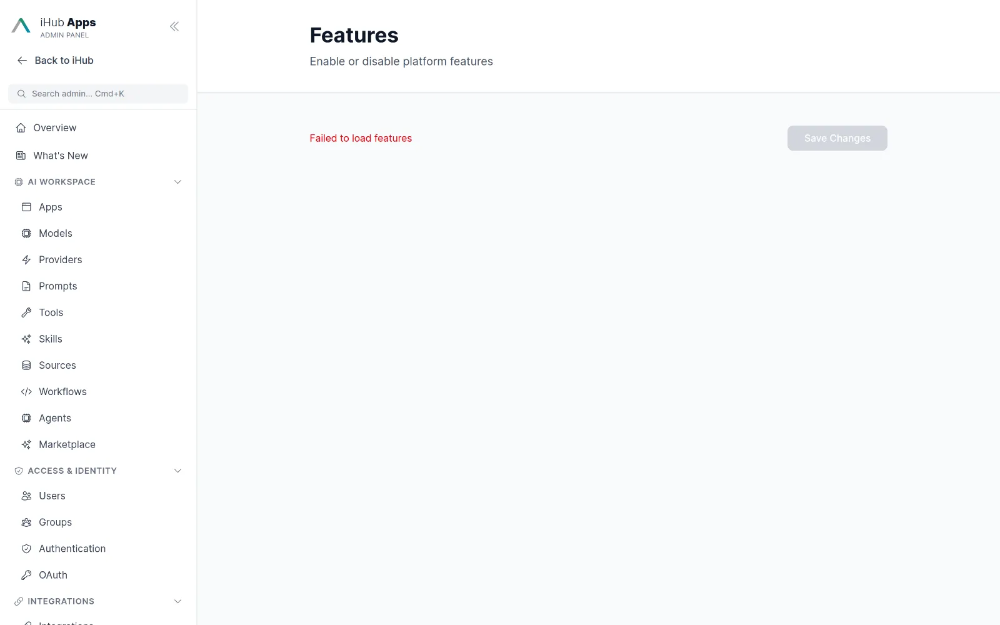
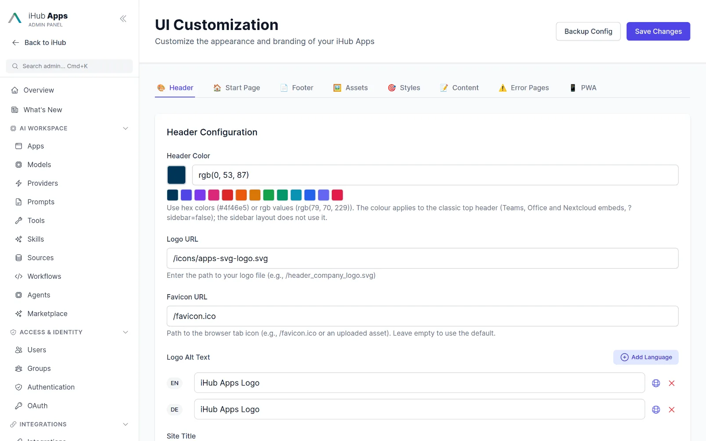

Central governance for AI across the whole company.
One admin panel controls what every team may use, how it looks, where data goes and what it costs. Deploy it on your terms, from a single server to a multi-worker cluster.

Everything IT needs in one place.
AI workspace
Apps, models, providers, prompts, tools, skills, sources, workflows, agents and marketplace.
Access & identity
Users, hierarchical groups, authentication providers, OAuth clients and connections.
Integrations
Outlook, browser extension, Nextcloud, Google Drive, Office 365, Jira, MCP servers, MCP gateway, credentials.
Customization
Header, footer, start page, theme, assets, error pages, PWA, pages, short links and localization.
Observability
Usage reports, feedback, logging level, telemetry, chat history statistics and the audit log.
Platform
Feature flags, voice input, security, backup and restore, updates with rollback, advanced settings.
Built for operations teams.
Command palette, keyboard shortcuts, change history
Jump anywhere with Cmd+K. Every entity has a history drawer with before/after diffs and an unsaved-changes guard. What’s New shows the release notes for the version you just installed.

Backup, restore and self-update
Download the whole configuration as a ZIP, restore it with an automatic pre-import backup, and update the binary in place with rollback. Configuration changes are versioned Flyway-style with 120+ migrations applied on start.

Feature flags for a controlled rollout
Preview features such as Workflows, Agents, Skills, Marketplace, Durable Chats and Compare Mode are switched on when you are ready. Core features can be disabled for a leaner deployment.

Your brand, your languages
Logo, colours, title, tagline, footer, disclaimer, pages such as FAQ, privacy and terms, error pages and a PWA manifest. English and German ship; override any string, and let the AI translate admin-authored text.

Usage and feedback at a glance
Tokens by app, model and user with a timeline and CSV export. Star ratings and comments from users land in the feedback page for review.

Deployment and scaling
| Topic | What iHub provides | Docs |
|---|---|---|
| Install | One-line installer, single binary (Linux, macOS, Windows), Docker image, npm, Windows service | Installation |
| Zero-config start | Default configuration generated on first run, setup wizard for the first API key, no database | Getting started |
| Reverse proxy & subpath | nginx and Apache examples, X-Forwarded-Prefix detection, SSL termination | Reverse proxy |
| Scaling | Multi-worker cluster on one host; multi-server with a sticky load balancer and shared content volume | Scaling |
| Networks | Outbound HTTP proxy, SSL allowlists, SSRF guard, CORS for embedded deployments | Proxy |
| Observability | OpenTelemetry (OTLP, Prometheus), structured logging, health endpoint, run ledger | Telemetry |
| Configuration | JSON under one content folder, hot reload, versioned migrations, validation | Configuration |
| Support | Community on GitHub; enterprise support, custom features and hosting from IntraFind | sales@intrafind.com |
Why organizations choose iHub Apps.
Full data control
On-premise, private cloud or air-gapped. Local models for sensitive work.
No vendor lock-in
Any model, any provider, switchable per app and per group.
Enterprise knowledge
iFinder and iAssistant bring permission-aware enterprise search into every app.
No prompting skills required
Expert prompts ship with every app. Teams get value on day one.
Enterprise-grade security
SSO, LDAP, NTLM, encryption at rest, audit log, rate limiting.
Extensible without coding
Apps, models, sources and tools through the admin UI; full source code for everything else.
Questions & answers
How many users can one deployment serve?
A single server with several workers handles departments comfortably; a multi-server setup behind a sticky load balancer scales further. Model throughput is usually the limit, not iHub.
Do we need a database?
No. Configuration and runtime data live in a content folder as JSON and JSONL. A pluggable storage interface prepares for PostgreSQL and object storage.
How do upgrades work?
Binary installs update themselves from the admin UI with rollback; Docker deployments pull a new image. Configuration migrations run automatically and are forward-only.
What does IntraFind offer beyond the open-source product?
Enterprise support, hosting and GPU inference in German data centres, custom apps and integrations, and the iFinder and iAssistant enterprise search products.
Plan your rollout with IntraFind.
Start with the free download for a pilot department, then talk to us about support, hosting and enterprise search integration.
curl -fsSL https://raw.githubusercontent.com/intrafind/ihub-apps/main/install.sh | sh